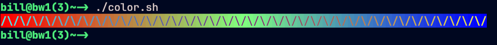
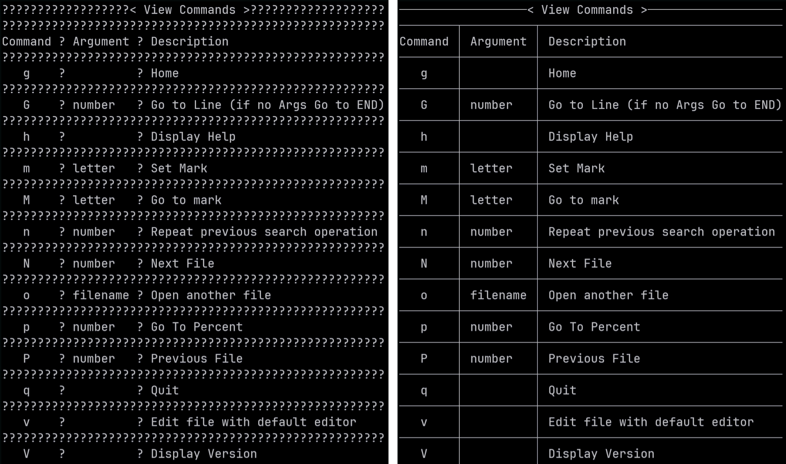
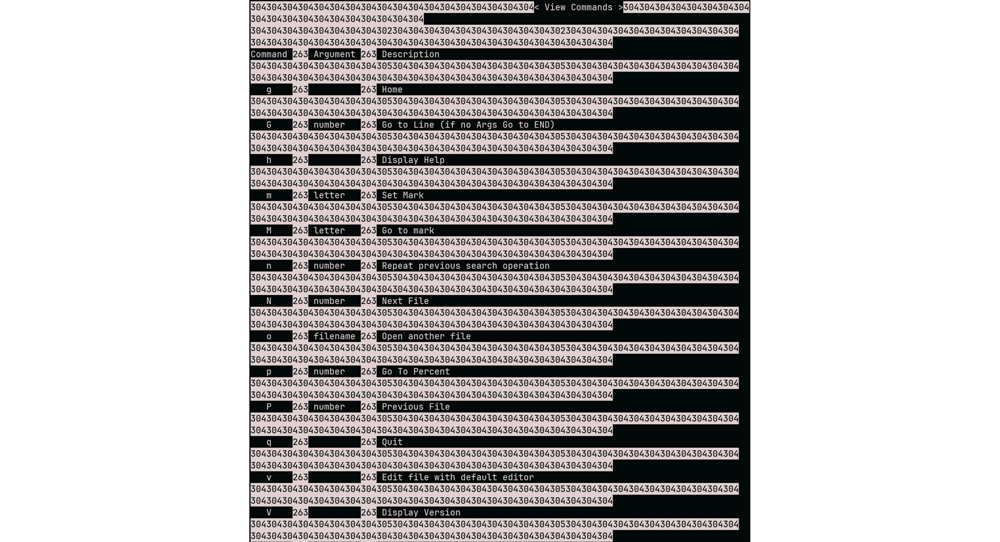
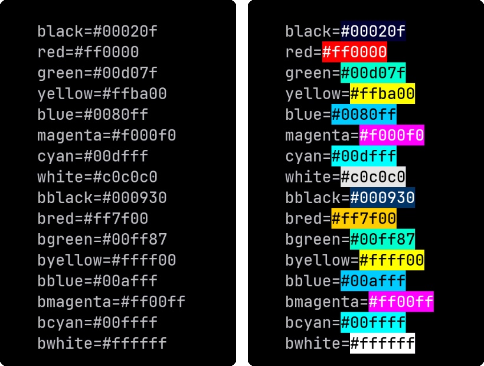
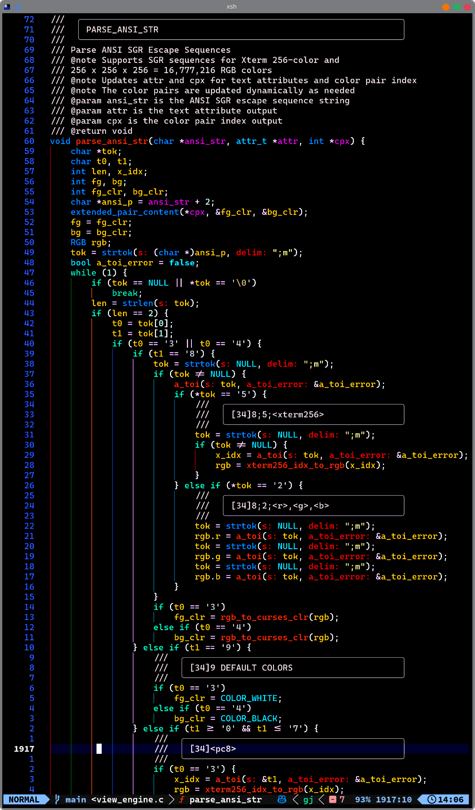

|
C-Menu v0.2.9
User Interface Toolkit
|
|
C-Menu v0.2.9
User Interface Toolkit
|
Q: Why is the output of "lf" not sorted?
A: It should be sorted. The easiest way to do that is to pipe lf output through "sort". The preferred method would be to use the -S option to execute a shell script such as ~/menuapp/bin/project_src. I have added "| sort" to that script based on your suggestion. Here is the new script:
I should have done that in all the C-Menu examples, and I will in the future. Thanks for pointing it out.
Q: Why do you have multiple executables for Menu, Form, Pick, and View?
A: That's a very good question. It would be very simple to have a single executable that behaves differently based on the name it is called with. That would be accomplished by creating symbolic links to the same executable with different names. I must have chosen to have separate executables for some reason, but I cant think of it at the moment. If you have thoughts on why I should change to a single executable or not, please let me know.
You may have noticed that that the menu executable alone can provide all the functionality of Menu, Form, Pick, and View, so the real question may be, "are the other executables even necessary?"
Q: Why don't you provide static executables for C-Menu?
A: Especially in a rescue or embedded environment, I can understand why you might prefer static executables, and that's why the build system has a provision to make rsh as a static executable. However, the executables that use NCurses present a much more difficult challenge. While NCurses itself can be built as a static library, it has many dependencies, and some of those attempt to open dynamic libraries, even when the executable is linked with the static NCurses and GLibc libraries. The resulting executables would probably work fine, everywhere except where you needed them.
It's not an unsolvable problem. Developers of embedded systems deal with such issues routinely. Perhaps one of them will volunteer to create a suite of static executables for C-Menu. C-Menu could then serve as a powerful tool for embedded and rescue systems development. If you happen to be one of those developers and are interested in contributing to the project, please let me know. I would be happy to collaborate with you on this.
Q: What is the icon for C-Menu?
A: I tried using the stylized C-Menu logo, but it is illegible at small sizes. At least temporarily, I am using the above image.
My main objectives in designing the icon were to make it simple, distinctive, and visually appealing. I wanted to create an icon that would be easily recognizable and memorable, while also conveying a sense of functionality and modernity. The overlapping tilted squares in the design represent the idea of multiple layers of functionality and customization that C-Menu offers. The use of transparency and cascading effects adds depth and visual interest to the icon, while also symbolizing the flexibility and adaptability of C-Menu as a tool for developers. Overall, I aimed to create an icon that would capture the essence of C-Menu's capabilities while also being visually striking and unique.
However, after querying several people as to their impression, there was no consensus. My wife said it looks like a diamond. My brother-in-law, Larry, a former US Marine and Vietnam Veteran said it looks like rank chevrons. My Son, Brian, said it's just overlapping tilted squares. Cousin Mike, an IBM Systems Analyst, said it looks like a ligature made from the less and more symbols "<>". What do you think? If you have a suggestion for a better icon, please let me know.
Q: Why don't you install cmenu in the standard directories, such as /usr/local/bin and /usr/local/lib64?
A: Installing C-Menu in a standard directory would limit its flexibility and make it less portable. By keeping C-Menu in a user-specific directory, such as ~/menuapp, users can easily customize and manage their C-Menu installation without affecting the system-wide configuration. This approach allows users to have multiple versions of C-Menu or different configurations for different projects without conflicts. Additionally, it simplifies the installation process, as users can simply clone the repository into their home directory without needing administrative privileges. Overall, this design choice enhances the usability and adaptability of C-Menu for a wide range of users and use cases.
Q: Some menu selections don't work. For example, "View CMenu Source with Tree-Sitter".
A: Thanks for pointing that out. I need to make a note in the manual that a working Tree-Sitter-CLI with C grammar is required for that option.
The option, "Menu Description" in the sample Main Menu included with C-Menu, is even worse, as it gives no clue that it requires a working installation of "bat".
Both of those will be documented in a new addition to the manual. In the meantime, I have added "with Bat" to the "Menu Description" menu item as a hint that it requires "bat". I have also added an option in the Main Menu to view view-engine.c, which I have pre-highlighted with Tree-Sitter.
Installing tools like Tree-Sitter-CLI and "bat" is not just about pretty colors. The colorization provided by Tree-Sitter reduces your cognitive load, allowing you to focus on the structure of the code and understand it more intuitively. The colors help you visually parse the code, making it easier to identify functions, variables, and other elements. This is especially helpful for complex codebases, where the structure can be difficult to understand without visual cues.
According to the National Institutes of Health (NIH), color coding can improve learning and retention by up to 80%. The use of color in code editors has been shown to enhance readability and reduce errors, making it an essential tool for developers. That's because language and visual processing are distinct cognitive systems that interact to enhance object recognition and categorization. While vision provides raw sensory input, language acts as a top-down, categorical cue that accelerates recognition, improves memory, and organizes conceptual representations.
Q: I want to do high precision calculations with data input from C-Menu Form.
A: Yes, you can augment C-Menu Form with the "awk" command to perform high precision math, if you have the GNU version of awk, Gawk compiled with the GNU GMP and MPFR libraries.
To determine if your version of Gawk supports high precision math, you can run the following command:
If the output includes "GNU MPFR" and "GNU MP", then your version of Gawk supports high precision math. For example, the output might look like this:
You can double-check by running a simple high precision math calculation. First, we will try gawk with default precision to show how that looks.
The output will be something like this:
The default precision is usually around 16 decimal places, which is why the output becomes meaningless after 16 digits.
Now we will use the -M option with Gawk and set our precision to 100 digits with PREC=333.
The output will be something like this:
You will recognize the famous sequence, 00729927..., which repeats indefinitely. With Gawk, GMP, and MPFR, you can calculate as many digits as you want.
Q: How can I tell if my terminal supports TrueColor (24-bit color)?
A: You can run the following command to test if your terminal supports TrueColor:
The above script is from:
If your terminal hardware supports TrueColor, you should see a smooth gradient of colors from red to green to blue. If you see a limited number of colors or a blocky gradient, your terminal may not support true color.

You can also check the COLORTERM environment variable by typing:
If the output is "truecolor" or "24bit", your terminal hardware supports TrueColor. For most situations, this is sufficient to confirm TrueColor support, and further checks are not generally not beneficial or necessary.
Even if your terminal hardware supports TrueColor, your terminfo may not. Keep in mind that the number of colors set in terminfo only affects applications that choose to use it. A terminfo setting of 256 colors does not limit which of the 16M colors an NCurses application can display, but only the number of color pairs that can be displayed simultaneously.
Note: The remainder of this section takes a deep dive into a rabbit hole that most users will not benefit from exploring. If your terminal hardware supports TrueColor, and the COLORTERM variable indicates TrueColor support, you needn't continue reading.
You can check your terminfo color capabilities by typing:
If the output is 16777216, your terminfo supports TrueColor.
Even if your hardware supports TrueColor, but the above indicators report only 256 colors or less, you can set the TERM variable to a value that supports Truecolor. For example, you can set the TERM variable to "xterm-direct" by adding the following line to your ~/.bashrc or ~/.zshrc file:
The caveat is that xterm-direct and other terminfo files may come with limitations. For example, I have found that xterm-direct, lacks the "ccc" (Can-Change-Color) flag. This flag is advisory only for applications that choose to use it.
I use one of::
You can create your own custom terminfo entry using infocmp and tic, but beware. Terminfo is a complex and sometimes arcane system, and not all applications will work properly with custom entries.
Both the Ghostty and Kitty terminfo files set Number of Colors to 256, and that is perfectly understandable considering that:
If you are determined to have more than 256 colors at one time, you can get around this issue by using infocmp to create a custom terminfo entry that specifies higher color capabilities. Here is an example of how to do this, but it is not recommended.
Add or modify the following lines in xterm-myterm.ti
Once you have finished editing xterm-myterm.ti, compile it using tic:
And, set your TERM environment variable to your new terminfo entry:
You can also refer to this helpful list of terminals and their color support:
Q: When I try to view a document that contains line-drawing characters, View displays question marks instead of the line-drawing characters. How can I fix this?
A: The file may contain characters above 0x80, which can't be translated by View's character translators. If the offending characters CP-437 line drawing characters, you can convert the file to UTF-8 encoding using a tool like 'iconv' or 'recode'. For example, you can use the following command:
The images below show, before, on the left, and after, on the right, using iconv.

As an interesting note, this also works for "less", which displays the decimal representation of the CP437 characters. This could be handy if you have been coding since the 1980s and recognize them as CP437 line-drawing characters.

Q: How can I add color to manual pages?
A: Manual pages use ANSI SGR escape sequences to add color.
0x1b[1m bold
0x1b[2m dim
0x1b[3m italic
0x1b[4m underline
0x1b[22m normal intensity (bold/dim off)
0x1b[23m italic off
0x1b[24m underline off
You can use the following sed script to substitute your own colors:
You can save this script to a file, or use the one that comes with Menu, (~/menuapp/msrc/man.sed) and then use it like this:
This will display the bash manual page with the specified colors in View.

Q: I want to colorize six digit HTML style hexadecimal colors, such as #RRGGBB, in View. How can I do this?
A: You can use the following awk script to colorize six digit HTML style hexadecimal colors in View:
This script matches six digit hexadecimal colors in the format #RRGGBB and adds the ANSI escape sequences to set the background color to the specified RGB values.
This will display the contents of yourfile.txt in View with the specified hexadecimal colors colorized. The image below shows before and after colorizing.

Q: How can I customize the color scheme in View?
A: If you have a modern color display, View can display up to 16,777,216 different colors using ANSI escape sequences applicable to foreground and background. You can also redefine the standard ANSI color palette in ~/.minitrc. When you exit Menu, your system colors revert to their previous state.

Q: I want to use the Menu API to develop my own code. How can I do that.
A: Comprehensive API/ABI documentation, including Functions, Variables, Typedefs, Enumerations, Macros, and complete program listings has been added. General purpose functions have been extracted from the Menu codebase and placed in a C library, libcm.so, which is documented in the API/ABI. The API/ABI documentation is available in the root directory of the C-Menu distribution. The API/ABI documentation is generated using Doxygen, and the source code is annotated with Doxygen comments to provide detailed information about each function, variable, typedef, enumeration, and macro. The API/ABI documentation includes descriptions of the functions, their parameters, return values, and any relevant notes or examples. The API/ABI documentation is organized into modules based on functionality, making it easier for developers to find the information they need. The API/ABI documentation is intended to be a comprehensive resource for developers who want to use the Menu API to create their own applications or extend the functionality of C-Menu. The API/ABI documentation is a work in progress, and we welcome contributions and feedback from the community to improve it. We will continue to expand and enhance the API/ABI documentation as Menu evolves and new features are added.
Q: How do I use the tree-sitter highlighter with View?
A: Documentation on this feature is sparse at the moment.
Here are the basic steps to get started with tree-sitter and View.
Verify installation:
You should edit ~/.config/tree-sitter/config.json to include the languages you want to use with View.
You will find an example config.json in Menu's tree-sitter directory.
Type the following command:

These instructions are admittedly sketchy and hard to follow. We will revise and clarify in the future.Q: How can I integrate external programs into Menu Form, such as an SQL Query or calculation?
A: We can use the executable "iloan" included with Menu as an example.
The Form will have four fields. The user must enter any three of the four values. Only one field may be zero. Iloan will calculate the value of the missing field and Menu Form will display it.
First, create a form file named "~/menuapp/msrc/iloan.f" with the following contents:

Next, create a help file named "~/menuapp/help/iloan.hlp" with the following contents:
Installment Loan Calculator Help
This form calculates the missing value of an installment loan.
Enter any three of the four values. Leave the value to be calculated as zero. Only one field may be zero.
Fields: Principal Amount - The total amount of the loan. Number of Months - The total number of monthly payments. Annual Interest Rate - The annual interest rate as a percentage. Payment Amount - The amount of each monthly payment. First Payment Date - The date of the first payment in YYYYMMDD format.
Add the following two lines to "~/menuapp/msrc/main.m":
: Installment Loan Calculations
!form iloan.f -i iloan.dat -S iloan -o iloan.dat
This will add a menu item to the Main Menu that will launch the Iloan Form. When you select the "Installment Loan Calculations" menu item, Menu Form will display the Iloan Form. After you enter any three of the four values and press Enter, Menu Form will call the "iloan" executable to calculate the missing value and display it in the form.
Menu Form will complain that "iloan.dat" does not exist the first time you run the form. This is normal. Menu Form will create the file when you exit the form.

After you enter the three values, you will see an option "F(5) Calculate". Press F(5) to calculate the missing value. When the calculation is complete, the missing value will be displayed in the form. You will then see an option, "F(8) Edit", which will allow you to make changes and try again. If you don't wish to make changes, press "F(10) Accept" to write all four values to "iloan.dat" and exit the form.
The next time you run the form, Menu Form will read the values from "iloan.dat" and display them in the form.
Here's a summary of the important parts of the form file format:
The ":" character is used as a delimiter in the fields above, but any character that is placed immediately after the line designator (H, T, F, ?) can be used as a delimiter. For example, the following two lines are equivalent:
T:2:4:Enter any three of the four values to calculate the fourth. T|2|4|Enter any three of the four values to calculate the fourth.
The following data types are currently supported for input fields:
Note that the data types determine field formatting, and on entry, numeric data is converted to its corresponding internal binary format, so that calculations can be performed. Both text and internal numeric binary data are available to the developer.
For applications that demand extreme accuracy, our plan is to integrate the "decNumber C Library", Copyright © IBM Corporation 2010, to provide 128 bit BCD (Binary Coded Decimal) in a future release.
The Field Format Specifiers can be any combination of upper and lower case, and new types can be easily added by modifying the source code.
Q: How does Menu send and receive data to external programs?
A: Currently, Menu is limited to communicating through files or pipes.
When you start Menu Form, Pick, or View, you can specify
-S executable or -R executable
-S runs executables that provide input data to Menu via pipe, and -R runs executables that receive output data from Menu via pipe.
The way it works is, Menu creates dual ended pipes, each with a read and write end before forking and spawning the executables. In the example (Installment Loan Calculations) above, Menu Form substitutes a write pipe for the standard output of the child process, and opens the read end of the pipe for its input. The called executable writes data to the pipe and Menu form reads the other end.
We can just as easily use named pipes or network sockets, although it requires a bit more configuration. If there is sufficient interest, C -Menu will have an event-driven server to handle network communications and asynchronous tasks. It is likely that server will be implemented in Rust to take advantage of tools like the Tokio and Serde crates.
Q: I noticed you have a menu option named, "Delete by Inode", but it doesn't work.
A: Thanks for reminding me. I will remove that choice from the menu until I can figure out a way to make it safe.
The original command was:
That is too dangerous if the user makes a mistake, so I replaced the find with "rm -i".
It doesn't delete files by inode, but at least it prompts the user before deleting files. Still, it's not what I intended, so it will be removed until I find a better solution.
I may eventually write a C or Rust program that will safely delete files by inode after confirming the correct file with the user as well as saving deleted files in a trash bin, on an opt-out basis.
Q: In Pick, how can I select multiple files to edit with vi?
A: You can use the -M option to enable multi-select in Pick. Here is an example command that allows you to select multiple files and open them in Menu Vi:
Select as many files as you want to edit and press F10. Pick will open the first file. If you are using Nvim, Vim, Less, or Menu View, you can type: ":n<enter>" to open the next file.
Q: You have an option to edit C source files in the Project Tree menu, but it doesn't list my header files. Can you fix that?
A: Sure. My bad. Of course you want your header files to be listed with your C files. Here is the new Menu line with the regular expression corrected to include both .c and .h files:
Q: How do I highlight a C source file using tree-sitter and view it in a View box window.
Leave out the -L 40 and -C 80 to display the file in full screen.
Alternatively, you can use the following command.
The "-S" option will tell view to execute the command and display the output. As an added bonus, if you don't provide a title with "-T", view will use the "-S" command as the title: